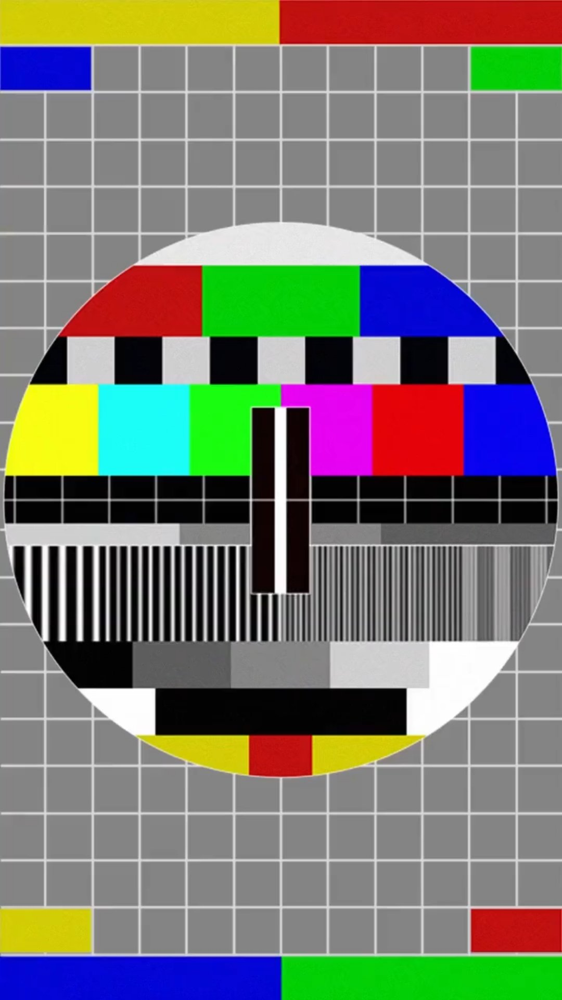

REC
00:00
体力
他在找你
LEVEL 0 / 后室
1
+
体力饮料
恢复 60 体力
0
2
↗
瞬移装置
随机安全瞬移
0
3
◉
击退脉冲
停顿敌人 5 秒
0
靠近自动拾取 · 按 1 / 2 / 3 或点击使用 · 每种最多 5 个
逃离
神秘跑男
开始游戏
PC: WASD 移动 | 鼠标 视角 | Shift 冲刺 | 手电筒自动开启
手机: 左侧摇杆移动 | 拖动转向 | 点击道具使用
道具: 靠近自动拾取 · 按 1 / 2 / 3 使用
你被抓住了
存活时间: 00:00
再来一次
成功逃脱!
用时: 00:00
再玩一次

⚙
🔊
设置
亮度
100%
鼠标灵敏度
100%
完成
游戏已暂停
点击继续 · 鼠标转向 / 按住画面拖动
继续游戏